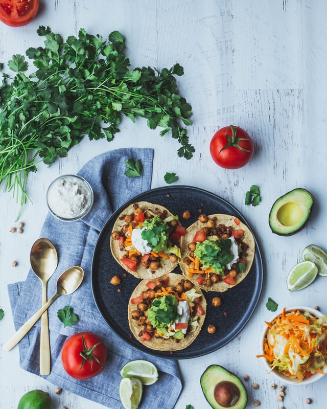

Tacos

Delicious Street Tacos
These amazing street tacos are to die for! These tacos are prepared with beef, tomatos, onions, sour cream, shredded cheese, and topped off with cilantro and a squeeze of fresh lime juice. Start off your Taco Tuesday right with these authentic, Mexican style tacos!
Ingredients
- 1 pound of lean ground beef
- Taco seasoning
- 1 medium onion, chopped
- 1 roma tomato, diced
- 1 lime
- Cilantro, finely chopped
- Cheese of your choice, finely shredded)
- Sour cream
- Corn tortillas
Steps
- Brown the beef in a large skillet on med-high until thoroughly cooked. Add taco seasoning and follow package instructions.
- Prepare your onions, tomatos, and cilantro and place in separate bowls.
- Warm your tortillas on a hot, flat pan.
- Add your choice of toppings, and that's it! Super easy.